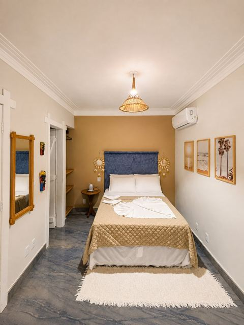
Quarto Double
Flat aconchegante com cama de casal, ar-condicionado, banheiro privativo e cozinha compacta. Algumas unidades têm varanda com rede.
A partir de R$ 430/noite*
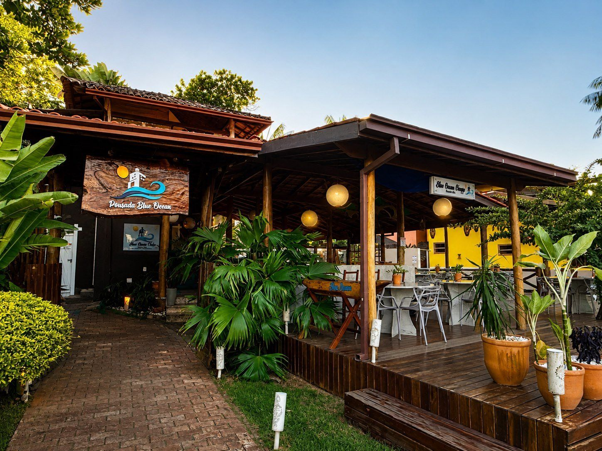
Praia da Concha · Itacaré · Bahia
Flats aconchegantes, piscina, SPA e um jardim tropical a poucos minutos da areia da Praia da Concha.
01 · Sobre a pousada
A Blue Ocean Flats é uma pousada de charme em Itacaré, com excelente localização na Praia da Concha. Os flats são climatizados e equipados com cozinha compacta, dando liberdade para você preparar o que quiser no seu ritmo.
Entre madeira, palha e um jardim tropical, a casa tem piscina ao ar livre, SPA com hidromassagem e espaços aconchegantes para desacelerar depois do mar. E sim: seu pet também é bem-vindo.
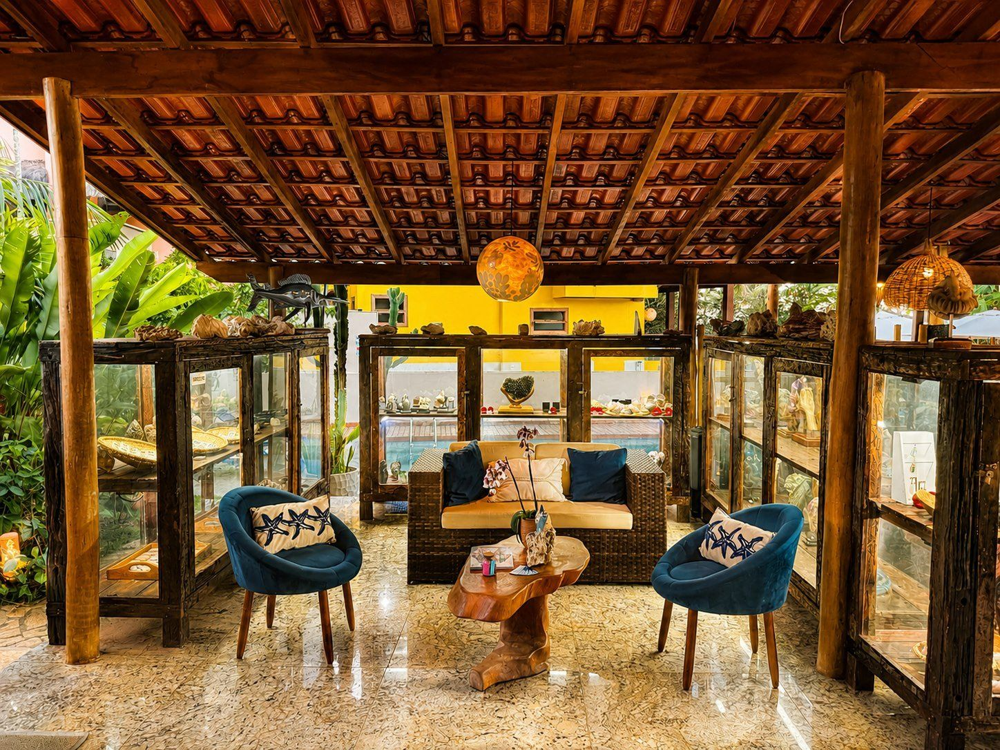
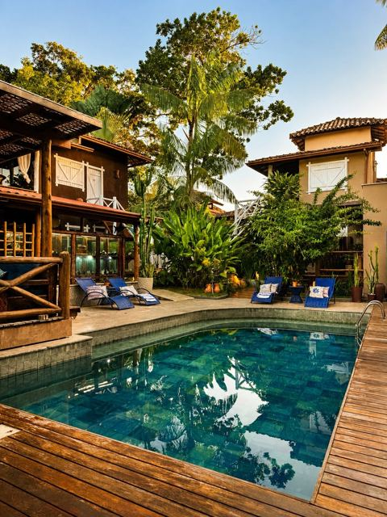
02 · Acomodações
Todos os flats têm banheiro privativo, ar-condicionado e cozinha compacta. Escolha o seu.

Flat aconchegante com cama de casal, ar-condicionado, banheiro privativo e cozinha compacta. Algumas unidades têm varanda com rede.
A partir de R$ 430/noite*
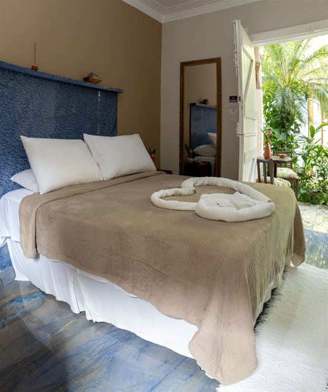
Suíte espaçosa com cozinha compacta completa e mais conforto para casais.
A partir de R$ 550/noite*
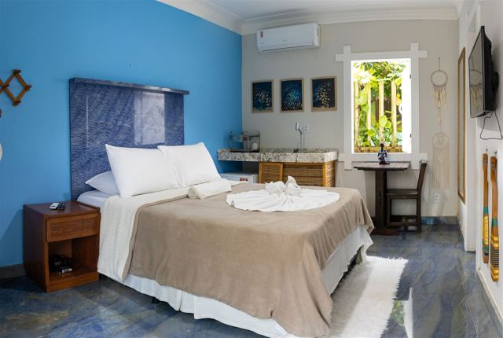
Quartos amplos para a família, com cozinha compacta e ar-condicionado. Uma unidade tem mezanino.
A partir de R$ 650/noite*
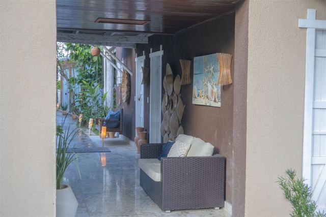
Suíte família luxo com espaço generoso, cozinha compacta e ar-condicionado.
A partir de R$ 700/noite*
Duas camas de solteiro, cozinha compacta e ar-condicionado, ideal para amigos.
A partir de R$ 430/noite*
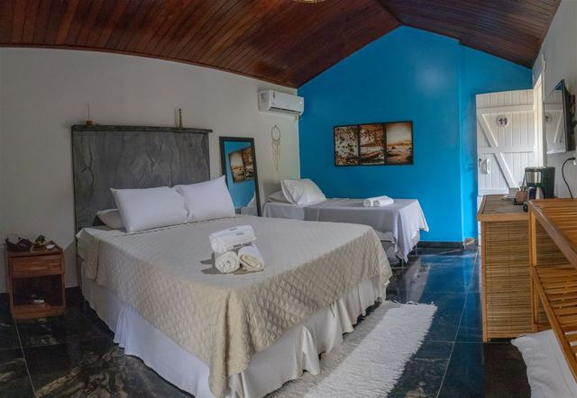
Experiência tipo apartamento, com vários quartos e estrutura completa: o mais exclusivo da casa.
A partir de R$ 1.000/noite*
*Valores "a partir de" divulgados no site oficial da pousada; podem variar conforme data e disponibilidade. Confirme pelo WhatsApp.
03 · Estrutura e comodidades
Check-in a partir das 14h
Check-out até 11h
04 · Cantinho instagramável
Arraste ou use as setas para girar o carrossel.
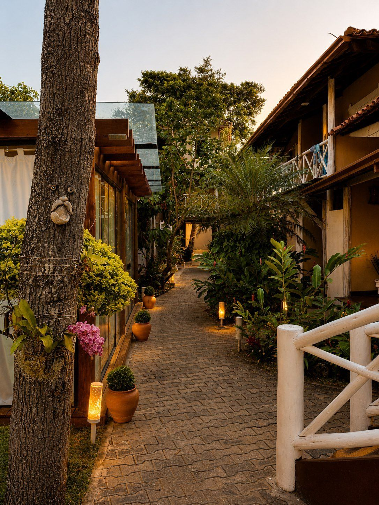
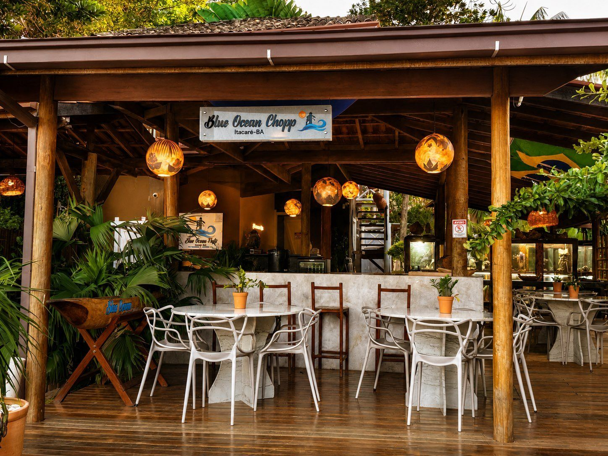
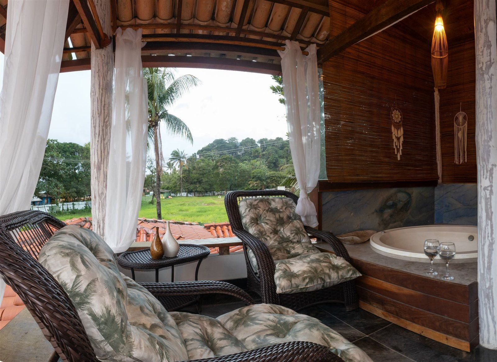
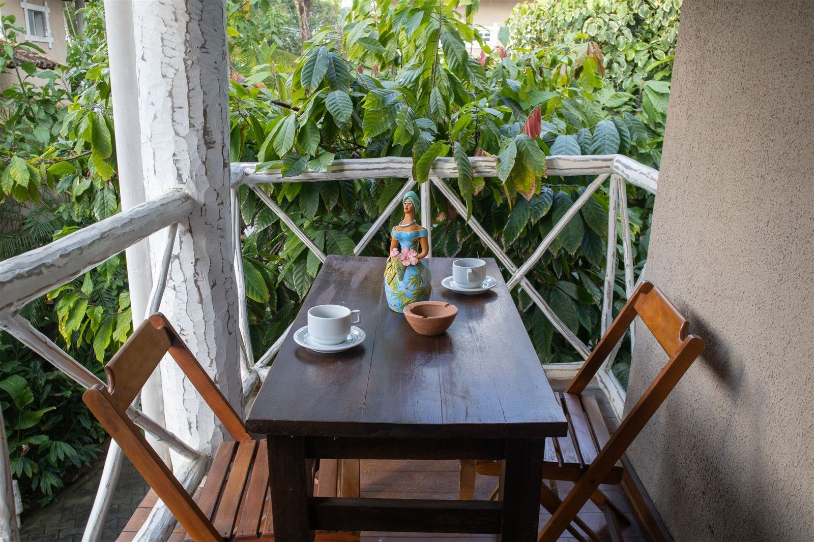
Marque @pousadablueoceann nas suas fotos
05 · Galeria
06 · Avaliações
07 · Localização
Reservas
Fale direto com a pousada e garanta as melhores condições.
Chamar no WhatsApp · (73) 99907-4679